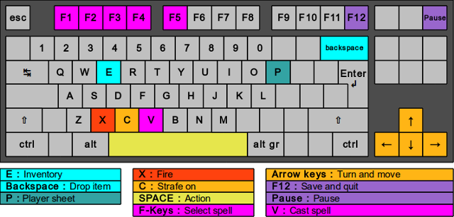
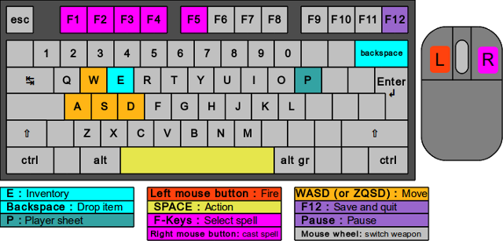

How to play - Reikaster underland
This game is a First Person Shooter. Your browser does not support Pointer Lock, an experimental feature only available on most recent versions of Firefox and Chrome (and Chromium). This means you must use your keyboard to control your character.
However you may use the mouse to control the user interface (inventory window...)
This game is a First Person Shooter. Your browser supports Pointer Lock, an experimental feature only available on most recent versions of Firefox and Chrome (and Chromium). This means you may use your keyboard and your mouse to control your character, like most of modern FPS games.
Make sure you click on the game screen to activate your Pointer Lock System.
To return to menu, [click here] or press ESCAPE.